VPN 접속 완료 후 사용자 PC에서 Crome 브라우저 실행
현장지휘통제시스템(https://www.m119.go.kr) 사이트 접속
※ 반드시 https 로 접속
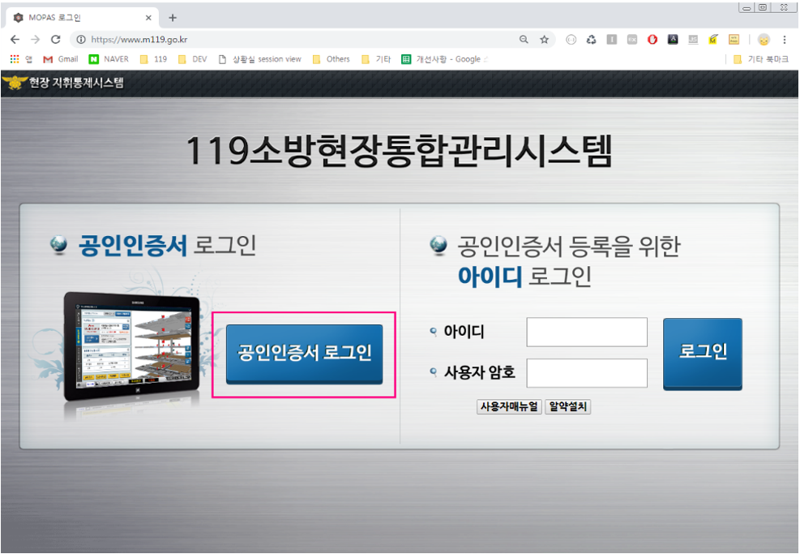주소창 바로 왼쪽에 (i)자 아이콘 클릭
툴팁창이 열리면 [사이트설정] 클릭
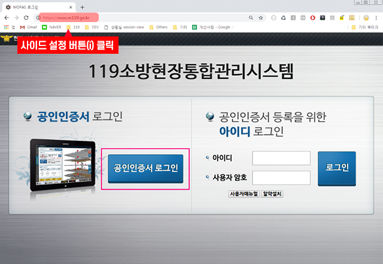아래 화면과 같이 모든 항목 허용으로 변경
※ 별도로 저장하지 않아도 변경 시 자동으로 저장됨
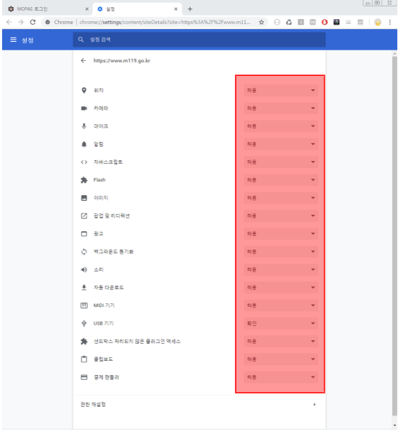변경사항 적용을 위해 새로고침 버튼 클릭
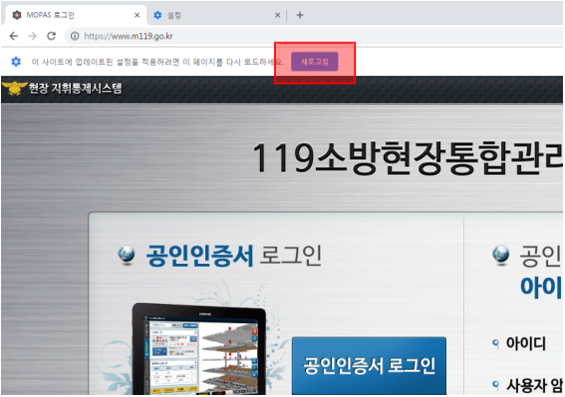사이트 새로고침이 완료되면 공인인증서 로그인을 통해 업무시스템에 로그인
※ 인증서가 등록되지 않았을 경우 인증서 등록 후 사용해야 함
사용자관리시스템(http://sso.m119.go.kr)에접속하여 공인인증서로 로그인
※ 인터넷망에서 사용자관리시스템 접속시 SSL VPN 접속 후 사용 가능
※ 사용자관리시스템 계정이 없을 경우 소방본부 정보통신 담당자에게 사용자 등록 요청 필요
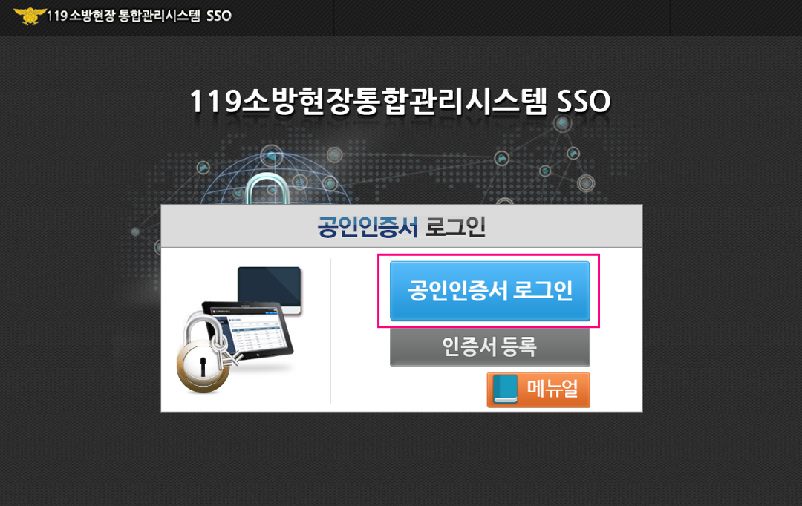우측 하단 [추가] 버튼 클릭
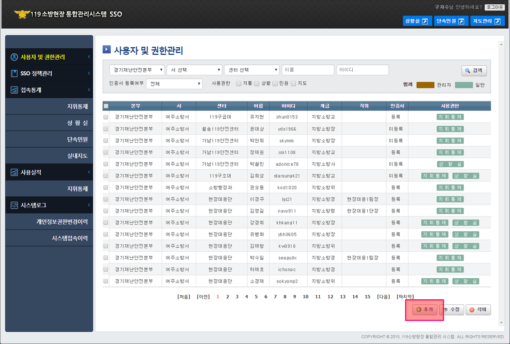사용자등록 팝업창이 열리면 [대원찾기] 버튼을 클릭하여 등록할 사용자 선택
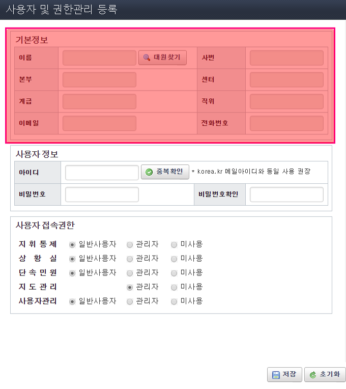사용할 아이디와 비밀번호를 입력
※ 희망 아이디 선택(korea.kr 메일의 아이디를 이용하면 편리함)
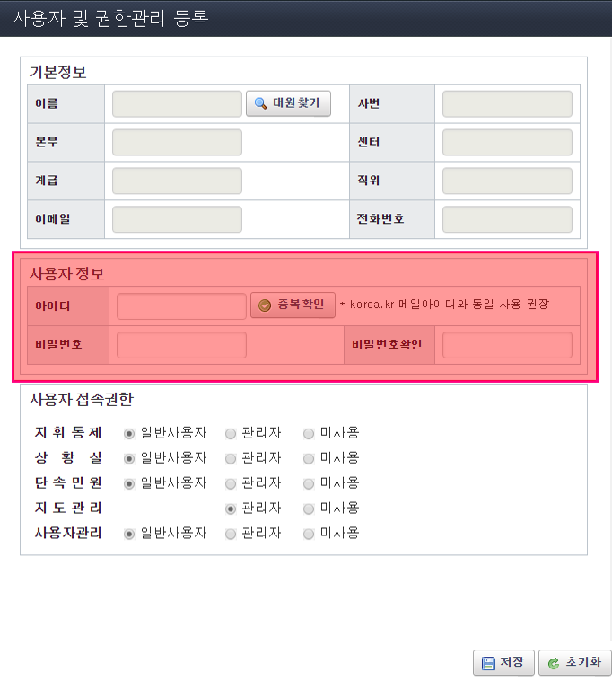사용자 접속권한을 선택하고 저장버튼을 클릭
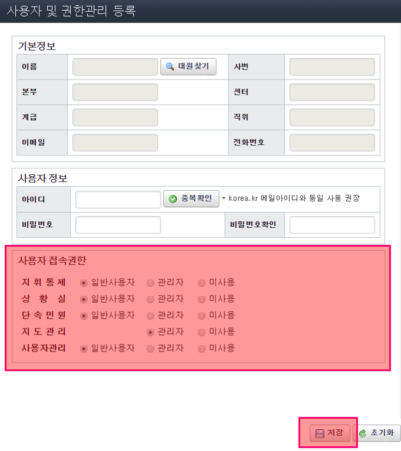생성한 아이디 및 비밀번호 입력 후 로그인 버튼 클릭
※ 로그인 버튼을 클릭하면 공인인증서 등록 화면으로 이동
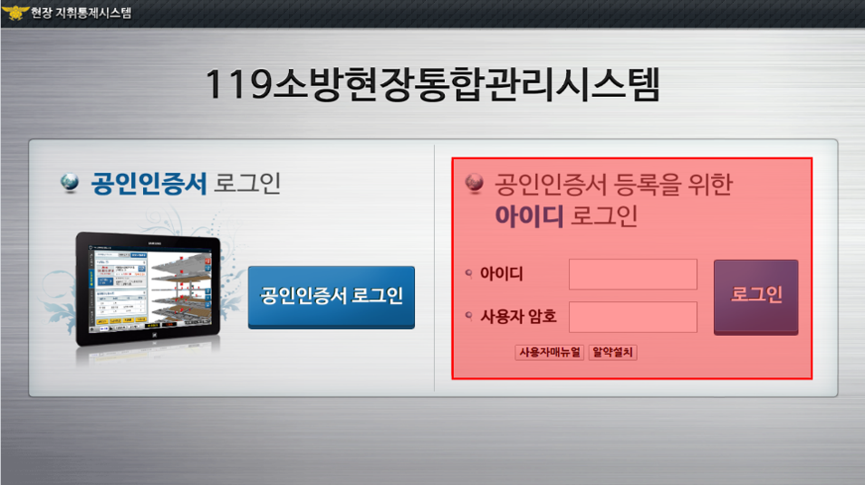공인인증서 등록버튼을 눌러서 공인인증서 선택 화면으로 이동
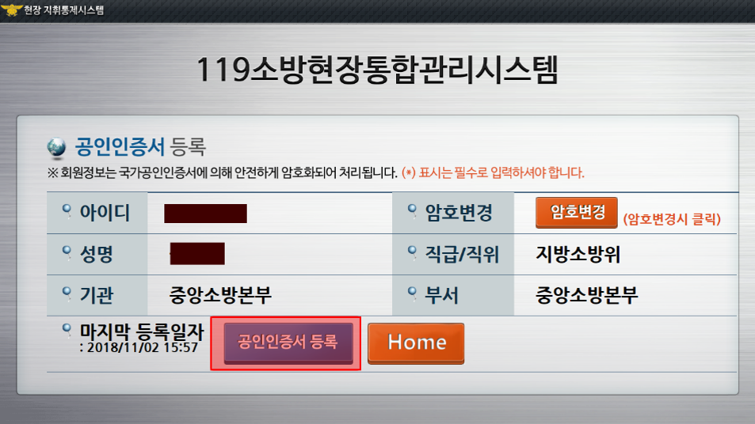공인인증서 등록버튼을 눌러서 공인인증서 선택 화면으로 이동
공인인증서 암호 입력 후 확인 버튼 클릭하면 공인인증서 등록 완료
소방현장통합관리시스템 메인화면에서 공인인증서 로그인 진행
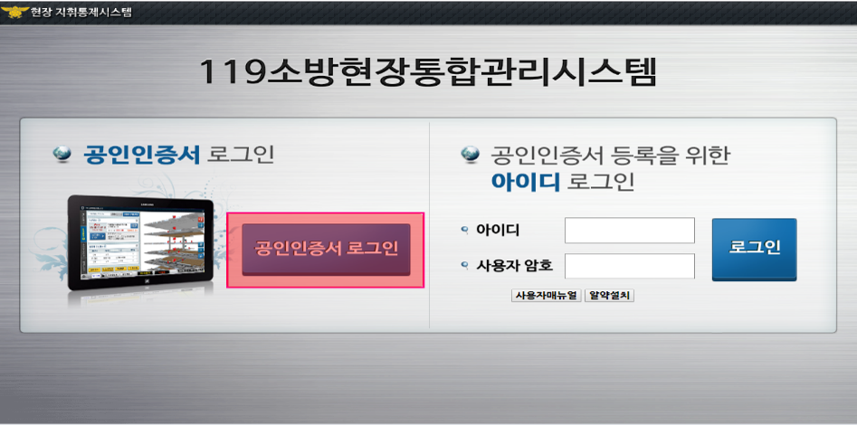